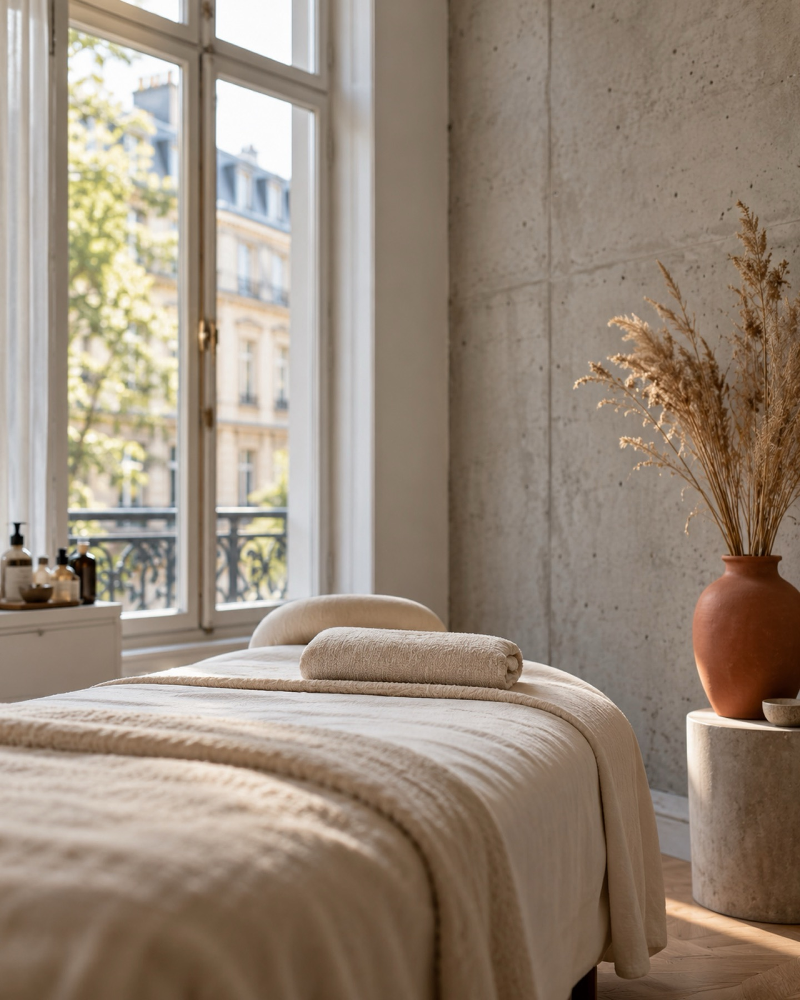

Haut.Klar.Düsseldorf.
Gesichtsbehandlungen mit Haltung: Beratung, die zuhört, Behandlung, die sitzt. Schanzenstraße 36.

Leistungen
Ihre Haut ist so individuell wie ein Fingerabdruck. Deshalb stimme ich jede Behandlung auf Ihre Bedürfnisse ab.
01Individuelle Gesichtsbehandlung

- Ziel
- Die Behandlung wird genau auf die Bedürfnisse Ihrer Haut abgestimmt, mit hochwertigen Pflegeprodukten, die ich je nach Behandlung auswähle.
- Dauer
- Wir planen genügend Zeit für Sie ein. Die genaue Dauer besprechen wir bei der Terminvereinbarung.
- Nachpflege
- Sie erhalten eine persönliche Pflege-Empfehlung für zu Hause.
02Microneedling

- Ziel
- Ein feines Needling-Gerät setzt kontrollierte Mikroreize und regt die natürliche Hauterneuerung an. Ob es zu Ihrer Haut passt, klären wir vorher persönlich.
- Dauer
- Die genaue Dauer besprechen wir bei der Terminvereinbarung.
- Nachpflege
- Ruhe, Feuchtigkeit und konsequenter Sonnenschutz. Details erhalten Sie im Studio.

Warum wir
Vier Gründe für makellos
Erst Beratung
Welche Behandlung perfekt für Sie ist, entscheidet sich erst nach der persönlichen Beratung vor Ort.
Ausgewählte Produkte
Ich arbeite mit hochwertigen Produkten für jeden Hauttyp und wähle sie je nach Behandlung aus.
Ihre Zeit
Ihre Online-Auswahl hilft mir, genügend Zeit für Sie einzuplanen. Im Studio stehen Sie und Ihre Haut im Mittelpunkt.
Ehrliche Empfehlung
Ich führe eine Behandlung nur dann durch, wenn sie erfolgversprechend ist.
Über Tanja Schröder
Jede Haut braucht ihre eigene Pflege.
Wer eine kurze Auszeit vom hektischen Alltag sucht, seine Haut und Seele verwöhnen lassen möchte, der findet seinen Weg zu meinem Kosmetikstudio makellos Kosmetik in Düsseldorf.
Hier arbeite ich mit ausgewählten, hochwertigen Produkten für jeden Hauttyp an den individuellen Bedürfnissen meiner Kundinnen, denn jede Haut bedarf einer einzigartigen Pflege. Freuen Sie sich auf liebevolle Details, ein angenehmes Licht und einen modernen Hauch von Vintage.
Ablauf
Ihr Termin in drei Schritten
Hautgespräch
Wir sprechen über Ihre Haut und Ihre Wünsche.
Behandlung
Sie lehnen sich zurück und nehmen sich Zeit für sich.
Pflege-Empfehlung
Sie erfahren, wie Sie Ihre Haut zu Hause unterstützen.
Im Studio
Einblicke
Gut zu wissen
Fragen
Wie bereite ich mich vor?
Wählen Sie bei der Buchung einfach die gewünschte Behandlung aus. Ob sie wirklich die richtige ist, klären wir persönlich im Studio. Ihre Online-Auswahl ist nicht verbindlich.
Wie lange dauert eine Behandlung?
Das hängt von der gewählten Behandlung ab. Die genaue Dauer besprechen wir bei der Terminvereinbarung.
Was ist danach zu beachten?
Sie erhalten von mir eine persönliche Pflege-Empfehlung, abgestimmt auf Ihre Haut und die Behandlung.
Muss ich bei der Buchung bezahlen?
Nein. Zur Absicherung des Termins wird lediglich eine Zahlungsart autorisiert, es wird nichts abgebucht. Sie bezahlen nach der Behandlung direkt im Studio.
Was gilt bei Terminabsage?
Bis zu zwei Tage vorher können Sie Ihren Termin selbst über die Plattform verschieben. Sollten Sie kurzfristig verhindert sein, sagen Sie bitte mindestens 48 Stunden vorher ab. Dann kann ich den Termin anderweitig vergeben.
Kontakt und Anfahrt
Termine online buchen, rund um die Uhr
- Adressemakellos Kosmetik, Tanja Schröder
Schanzenstraße 36, 40549 Düsseldorf - Telefon0160 8070051
- E-Mailschroeder@makellos-kosmetik.de
- Instagram@tanja_makellos
Danke, wir melden uns.